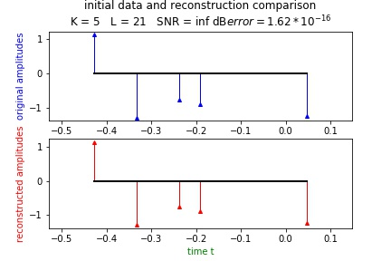
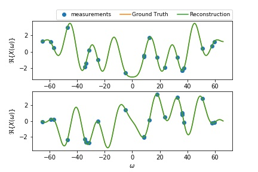

Irregular Fourier Sampling Reconstruction¶
Irregular Fourier Sample Theory¶
Suppose we have a signal
It thus have a Fourier Transform
We now want to recover the signal :math`x(t)` from a number of measurements of \(X(\omega)\). If the measurements were uniformly sampled, we could directly use the inihilating filter but it isn’t always the case. We thus want an approach that performs on non-uniform samples. So we want to interpolate the measurements.
where \(\psi(.)\) is a certain interpolation kernel.
By evaluationg the above at \(\omega_l\), we establish a linear mapping G between the the measurements a and the sampled signal b.
We then perform the same algorithm as in the time domain. See Irregular Time Sample Theory.
Irregular Fourier Sample Application¶
Let’s see how to use this algorithm for Fourier domain samples. First, install the package, see Installation page.
noiseless case¶
Reconstruction setup:
from fri_oo.irr_four_samp import IrrFourSamp as IFS
K = 5 # number of diracs
M = 21 # number of samples over the signal
tau = 1. # period
L = M # number of measurements
IFS_noiseless = IFS(K, M, tau, L) # instanciation
IFS_noiseless.setup() # in this example we use the built-in sample generator
IFS_noiseless.add_noise() # we don't add any noise
Reconstruction:
IFS_noiseless.reconstruction() # this will perform the reconstruction with default parameters
spectrum periodic, correcting interpolation kernel
Noise level: 1.00e-13
Minimum approximation error |a - Gb|_2: 2.00e-14
The results can then be displayed with pandas using show_results():
IFS_noiseless.show_results()
| original tk | reconstructed tk | original ak | reconstructed ak |
|---|---|---|---|
| -0.428571 | -0.428571 | 1.133117 | 1.133117 |
| -0.333333 | -0.333333 | -1.290417 | -1.290417 |
| -0.238095 | -0.238095 | -0.762772 | -0.762772 |
| -0.190476 | -0.190476 | -0.895557 | -0.895557 |
| 0.047619 | 0.047619 | -1.241257 | -1.241257 |
To recover the reconstructed \(a_k\) and \(t_k\):
ak = IFS_noiseless.ak_recon
tk = IFS_noiseless.tk_ref
to plot the result (here we also have the original signal), we first save them:
its_noiseless.save_results("ifs_noiseless") # saved to the result file
its_noiseless.plot()
To see how to manage results: Data Management
 noisy case¶
K = 5
M = 21
tau = 1.
L = 2 * M # here we oversample since we will be adding noise
P = 5 # SNR ratio in dB
IFS_noisy = IFS(K, M, tau, L)
IFS_noisy.setup()
IFS_noisy.add_noise(P = P)
IFS_noisy.reconstruction()
spectrum periodic, correcting interpolation kernel
Noise level: 8.90e+00
Minimum approximation error |a - Gb|_2: 8.12e+00
IFS_noisy.show_results()
| original tk | reconstructed tk | original ak | reconstructed ak |
|---|---|---|---|
| -0.476190 | -0.472445 | -1.313043 | -1.470098 |
| -0.190476 | -0.196718 | 0.548886 | 0.765750 |
| 0.000000 | 0.003393 | -1.315494 | -1.605295 |
| 0.047619 | 0.054651 | -1.042315 | -1.057258 |
| 0.285714 | 0.291236 | 1.275741 | 1.398635 |
IFS_noisy.save_results('ifs_noisy')
IFS_noisy.plot()
parameterized reconstruction¶
In this example we will reconstruct the signal with given measurements and linear mapping G:
K = 5 # number of diracs
M = 21 # number of samples over the signal
tau = 1. # period
L = M # number of measurements
IFS_param = IFS(K, M, tau, L) # instanciation
IFS_param.setup(a = a)
# a is the *(L x 2)* measurements matrix, with first row the frequencies and second row the amplitudes
IFS_param.add_noise() # we don't add any noise
IFS_param.reconstruction(G = G) # G is the linear mapping as explained above in the theory part
IFS_param.save_results('ifs_param')
IFS_param.plot()